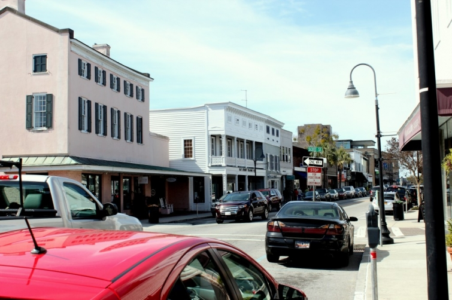

.png)
.PNG)
.PNG)
.PNG)
.PNG)
.PNG)
.JPG)
.JPG)
.PNG)
.PNG)


When I wrote my post on Valentine gifts a week ago, Cindy asked, “Where’s the gift for hubby?” Good question, Cindy! We like to double up on celebrations around here, so we combine our Valentine’s gifts to each other with a birthday gift for my husband (since his birthday is the day after Valentine’s Day.) This year the gift was a trip to South Carolina. We had never been to Beaufort, but I had read a lot about it. We packed up this weekend and headed to the Carolina Low Country.
Mid morning, we crossed over the Broad River…
and a little later we made our way into downtown Beaufort.
It was way too early to check into our accommodations, but all the parking spaces downtown had parking meters, and we didn’t know how long seeing the downtown district would take. So we stopped at the inn, and they graciously let us leave the car in their parking area. Then we began exploring the town on foot. There were a lot of art galleries, some gift shops, and a large number of restaurants.
As I was turning to go in one shop, I heard a man yell, “Kelly!” I turned around and low and behold there was one of my former assistant principals! Can you believe that – 3 1/2 hours from home, and I run into him! He had always been one of my favorite administrators, so it was good to see him. We talked a little while and then continued exploring Beaufort. Besides all the shops, there were quite a few beautiful (and very old) churches.

And quite a few very old cemeteries. Some of the graves there dated to the 1700’s. I had never been to a church before that had the entire yard like this. It was very different from what we have around here!
It was getting close to lunch time, so after reading menus in various restaurant windows we decided to make our way to a place that I had written in my notes as one spot I definitely wanted to see: Low Country Produce.

It was a wonderful building that had once been the city’s library and most recently, the old city hall. Take a look around here. Don’t you just love that green paint?! Hmm…might be the inspiration for a change or two around our house. 


As we were looking for a table where we would enjoy our lunch, I spotted…you guessed it…my former assistant principal again! Imagine that – out of all the wonderful restaurants Beaufort had to offer. I guess great minds think alike. 🙂
We took our table, looked over the menu, and both of us ordered the LCP burger topped with jalapeno pimento cheese and bacon. A side of their homemade chips was added to both of our orders. (I had eaten a bunch of mine before remembering to take the photo – sorry!) The burger was delicious. I have developed quite an addiction for pimento cheese on burgers lately! yum…
After lunch we decided to walk around the residential part of Beaufort and just enjoy the architecture of the area. We started with some of the homes facing the water near the commercial district. Glory these were gorgeous!

Then we made our way into areas further away from all the restaurants and shops. Again, there were beautiful homes everywhere we looked (and lots of “haint blue” porch ceilings.)
Even the smaller ones were charming.

One of the inns where we contemplated staying was the Rhett House Inn. It is another antebellum mansion dripping with Southern beauty (and dripping with Spanish moss.)
And look at this charming mode of transportation for getting around the historic area of Beaufort.
Now, do you remember this house in my post on loving red? highstreetmarket.blogspot.com
highstreetmarket.blogspot.com
I had no idea where that house was when I put it in my post, but look what I found right behind the Rhett House Inn… 🙂
Yep, same house! Isn’t that funny?!
I am going to stop here and leave you waiting on a bench overlooking the water downtown, but I will be back soon to tell you about where we stayed and a lovely place to live near Beaufort. 
until next time…


.PNG)
We just got back from our second vacation in Beaufort. I just love wandering around and around in the historic district, particularly in the evening when homes are lit up:). We stay at a bungalow in the historic district, vrbo 282865. The perfect place to stay when you want to be close to everything and be able to spread out more than in a hotel room. Perfect southern hospitality!
Oh sweet South Carolina. Love my home state!
Oh thank you for sharing. We live way up in Northern Vermont and Charleston and Beaufort are on the top of my Bucket List. Looking forward to more….
Loving the tour as we await another weekend (that makes three in a row) of winter storms. And, also because I am especially missing being in South Carolina for February school vacation, we haven’t been able to do that in a few years, darn. The first time we went to S.C., Beaufort was on the must-see list; it was a feature in Glory, one of my all time faves. From your pictures, I am eager to visit again, soon.
My sister, in Michigan told me about your website. I live in Beaufort. Yes it is just this pretty. Wish you would have included the marina and Waterfront Park along a gorgeous river just right for cruising, fishing, shrimping, oystering and crabbing. They are really the hub of everything special we do here to get together. We have a magnificent Water Festival each year and the main street you included (Bay Street) is the gathering spot for all our parades. Cross the bridge and another bridge and you travel through Lady’s Island and on to St. Helena and the ocean. Don’t forget the home of the US Marine Corps Recruit Depot Parris Island.
Kelly,
This looks like a movie set it’s so charming. How fun. I can’t wait to hear more. This was a great gift for Hubby, and lucky you got to tag along. 🙂
Karen
Kelly, Thanks for sharing your lovely trip with us! I really enjoyed it! The cute place you ate at looks wonderful! I love all of the green accents as well. Did you guys buy any extra goodies while eating there? Did you do any other shopping as well? I can’t wait to see the rest of your trip!
We visited Beaufort a few years ago and I fell in love with it. All the charming shops and homes. We took a wagon tour of the town and really enjoyed it more than Charleston.
I’ve always wanted to go into Beaufort when we were on our way back home to KY, but never had the time! I always said if I ever got a hound dog I would name it—Beaufort!! I simply love to go into old churches and explore old cemeteries, too. I know what “haints” are back in the mountains but will need to look up haint blue ceilings?I so enjoy reading about your adventures and seeing your photos. I learn about so many interesting different places. Can’t wait to see the next post about the rest of the trip!
Beaufort looks just lovely. How funny to find a home you posted and knew nothing about – in the place you’re vacationing, where you’d never been before! Lovely photos.
Jan ♥
I love that your pictures show so much of the beauty of your part of the country. It’s so different from what we see on a road trip. You’ve got a great eye. We’ll have to make our way out there sometime and see it for ourselves. Just beautiful!
Kelly, I so enjoyed all the pictures of Beaufort. Kinda funny because my sister actually works in Beaufort!!! Wow, I never realized the town she works in was so beautiful and historic. What a wonderful trip.
Kelly…my hubby and I have been to Beaufort and loved it!…We say that the next time we go, we shall stay at the Rhett House Inn….we stayed at a pretty inn that overlooked the water…When we first arrived there, we took the carriage ride…it gives us a good feel of the area and it’s history before we go out on our own…I love the entire area..so beautiful!…Glad you had a wonderful time! I am sure the locals told you that most of of the movie, Forrest Gump was filmed there…
How funny/fun to find the very house you’d posted earlier! I had to google “haint blue” since I’d not heard that expression. So interesting! I’ve lived most of my life up here in the Pacific NW and hadn’t bumped into that tradition in any reading. The South is a whole different culture, I think, from us “out west”. Thanks for sharing your adventures.
WOW!!!!!!!!! I just took a trip down memory lane!!!….My sister and I did a “Road Trip” to Beaufort a couple of years ago… just because we had both read so much about this place but had never been and we live just down the highway a bit ( well sort of .. Fla.)…. I have some of the very same Pictures!!! I fell in love with downtown Beaufort and the waterfront!! love love the history… and the beautiful homes….. So funny… see the sign pointing to “Coffee house’….????? I drank the most delicious Cinnamon Hazelnut Latte I have EVER had right there!!! LOLOLOL!!!!
I love Beaufort. My husband grew up in Savannah and their friend (and dentist) had a summer home there. I remember a very pleasant afternoon there when they hosted the church for an afternoon of food and fellowship. Loved seeing all your pictures!
This looks like an amazing little place for a getaway! Love the old churches and graveyards! And that converted café is adorable!
How funny Kelly! I was there this weekend as well. Check out the places I visited. Looks like we have the same thing in mind…
http://hickorytrailblog.blogspot.com/2013/02/our-weekend-get-away.html
I live in sc and I love Beaufort! Just curious…are the initials of the asst. principal M B? A friend of mine lives there and I thought he could be the one!
Hey Kelly!! So glad you are having a good time. The pictures look great – it looks like the weather was nice. Your burger looks delicious. If I’m ever in the area, I’ll stop by that restaurant!
Hi Kelly – What a wonderful description of your trip to Beaufort…I can’t wait to hear the rest! It sounds like a blace that NEEDS to make it on my “must see” list. Thanks for sharing!